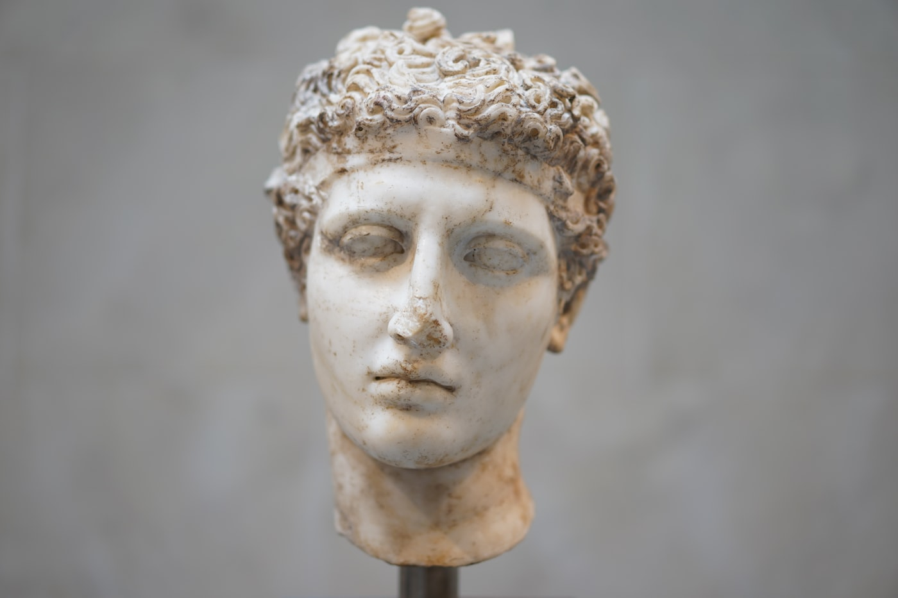

The Whole Child
We shape the approach to the child — not the child to a set method.
Specialized Programs · Aristotle
Bespoke mentorship drawn from the Oxford tutorial tradition — a proprietary, multi-year platform built to form judgment, not to raise a grade.

The approach
We shape the approach to the child — not the child to a set method.
Short-term tutors patch holes. Long-term mentors reveal patterns and lay foundations.
You set the destination. Your mentor plots the course.
Education beyond information
Technology can deliver content. It can even simulate explanation. What it cannot do is teach discernment, model ethical reasoning, or guide a young person through moral complexity.
Real confidence does not look like certainty. It looks like curiosity.
The difference
Proprietary to Oxford Tutors, and joined by application. We take on a limited number of families each year, and begin, always, with a conversation.